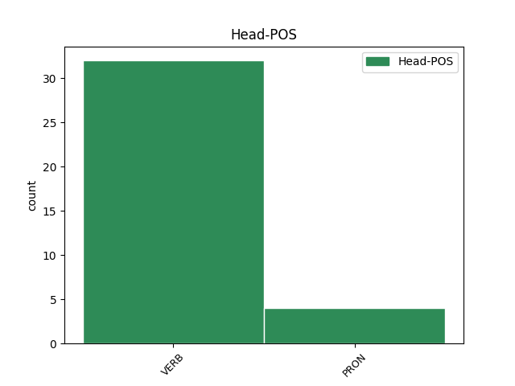

Distribution of features within this leaf


Agreement Rules sorted by frequency.
- When the dependent token is the conjunct(conj) of the head token, and the head token is VERB and the dependent token is AUX.
1 see _ _ _ _ 0 _ _ _
2 raputab _ _ _ _ 0 _ _ _
3 su _ _ _ _ 0 _ _ _
4 läbi _ _ _ _ 0 _ _ _
5 , _ _ _ _ 0 _ _ _
6 tallab tallama VERB V Mood=Ind|Number=Sing|Person=3|Tense=Pres|VerbForm=Fin|Voice=Act 0 _ _ _
7 su _ _ _ _ 0 _ _ _
8 eneseusu _ _ _ _ 0 _ _ _
9 jalge _ _ _ _ 0 _ _ _
10 alla _ _ _ _ 0 _ _ _
11 - _ _ _ _ 0 _ _ _
12 - _ _ _ _ 0 _ _ _
13 - _ _ _ _ 0 _ _ _
14 - _ _ _ _ 0 _ _ _
15 - _ _ _ _ 0 _ _ _
16 - _ _ _ _ 0 _ _ _
17 - _ _ _ _ 0 _ _ _
18 - _ _ _ _ 0 _ _ _
19 - _ _ _ _ 0 _ _ _
20 - _ _ _ _ 0 _ _ _
21 - _ _ _ _ 0 _ _ _
22 - _ _ _ _ 0 _ _ _
23 - _ _ _ _ 0 _ _ _
24 - _ _ _ _ 0 _ _ _
25 - _ _ _ _ 0 _ _ _
26 ja _ _ _ _ 0 _ _ _
27 see _ _ _ _ 0 _ _ _
28 on olema AUX V Mood=Ind|Number=Sing|Person=3|Tense=Pres|VerbForm=Fin|Voice=Act 6 conj _ _
29 see _ _ _ _ 0 _ _ _
30 , _ _ _ _ 0 _ _ _
31 millest _ _ _ _ 0 _ _ _
32 toitub _ _ _ _ 0 _ _ _
33 hirm _ _ _ _ 0 _ _ _
34 ... _ _ _ _ 0 _ _ _
1 Lennuinstruktor _ _ _ _ 0 _ _ _
2 annab _ _ _ _ 0 _ _ _
3 pommitaja _ _ _ _ 0 _ _ _
4 meeskonnale _ _ _ _ 0 _ _ _
5 ülesande _ _ _ _ 0 _ _ _
6 : _ _ _ _ 0 _ _ _
7 “ _ _ _ _ 0 _ _ _
8 Teil sina PRON P Case=Ade|Number=Plur|Person=2|PronType=Prs 0 _ _ _
9 on _ _ _ _ 0 _ _ _
10 lennukis _ _ _ _ 0 _ _ _
11 tulekahju _ _ _ _ 0 _ _ _
12 ja _ _ _ _ 0 _ _ _
13 te _ _ _ _ 0 _ _ _
14 peate pidama AUX V Mood=Ind|Number=Plur|Person=2|Tense=Pres|VerbForm=Fin|Voice=Act 8 conj _ _
15 langevarjuga _ _ _ _ 0 _ _ _
16 välja _ _ _ _ 0 _ _ _
17 hüppama _ _ _ _ 0 _ _ _
18 . _ _ _ _ 0 _ _ _
1 Elan elama VERB V Mood=Ind|Number=Sing|Person=1|Tense=Pres|VerbForm=Fin|Voice=Act 0 _ _ _
2 üksi _ _ _ _ 0 _ _ _
3 ja _ _ _ _ 0 _ _ _
4 mul mina PRON P Case=Ade|Number=Sing|Person=1|PronType=Prs 1 conj _ _
5 külakese _ _ _ _ 0 _ _ _
6 suurim _ _ _ _ 0 _ _ _
7 konteiner _ _ _ _ 0 _ _ _
8 , _ _ _ _ 0 _ _ _
9 mida _ _ _ _ 0 _ _ _
10 väiksest _ _ _ _ 0 _ _ _
11 pinsist _ _ _ _ 0 _ _ _
12 täidetud _ _ _ _ 0 _ _ _
13 ei _ _ _ _ 0 _ _ _
14 saa _ _ _ _ 0 _ _ _
15 , _ _ _ _ 0 _ _ _
16 kui _ _ _ _ 0 _ _ _
17 prügiauto _ _ _ _ 0 _ _ _
18 kohale _ _ _ _ 0 _ _ _
19 tuleb _ _ _ _ 0 _ _ _
20 . _ _ _ _ 0 _ _ _
Disagree Examples:
1 Hiljuti _ _ _ _ 0 _ _ _
2 läksin minema VERB V Mood=Ind|Number=Sing|Person=1|Tense=Past|VerbForm=Fin|Voice=Act 0 _ _ _
3 oma _ _ _ _ 0 _ _ _
4 külalistega _ _ _ _ 0 _ _ _
5 sinna _ _ _ _ 0 _ _ _
6 ja _ _ _ _ 0 _ _ _
7 oli olema AUX V Mood=Ind|Number=Sing|Person=3|Tense=Past|VerbForm=Fin|Voice=Act 2 conj _ _
8 ikka _ _ _ _ 0 _ _ _
9 piinlik _ _ _ _ 0 _ _ _
10 küll _ _ _ _ 0 _ _ _
11 . _ _ _ _ 0 _ _ _
1 Kui _ _ _ _ 0 _ _ _
2 seda _ _ _ _ 0 _ _ _
3 soovitust _ _ _ _ 0 _ _ _
4 järgida _ _ _ _ 0 _ _ _
5 , _ _ _ _ 0 _ _ _
6 siis _ _ _ _ 0 _ _ _
7 muutub muutuma VERB V Mood=Ind|Number=Sing|Person=3|Tense=Pres|VerbForm=Fin|Voice=Act 0 _ _ _
8 söögitegemine _ _ _ _ 0 _ _ _
9 millekski _ _ _ _ 0 _ _ _
10 enamaks _ _ _ _ 0 _ _ _
11 ja _ _ _ _ 0 _ _ _
12 me _ _ _ _ 0 _ _ _
13 ise _ _ _ _ 0 _ _ _
14 oleme olema AUX V Mood=Ind|Number=Plur|Person=1|Tense=Pres|VerbForm=Fin|Voice=Act 7 conj _ _
15 saanud _ _ _ _ 0 _ _ _
16 läbi _ _ _ _ 0 _ _ _
17 selle _ _ _ _ 0 _ _ _
18 uueks _ _ _ _ 0 _ _ _
19 ja _ _ _ _ 0 _ _ _
20 energilisemaks _ _ _ _ 0 _ _ _
21 . _ _ _ _ 0 _ _ _
1 Tahame tahtma VERB V Mood=Ind|Number=Plur|Person=1|Tense=Pres|VerbForm=Fin|Voice=Act 0 _ _ _
2 vastu _ _ _ _ 0 _ _ _
3 vaielda _ _ _ _ 0 _ _ _
4 aga _ _ _ _ 0 _ _ _
5 kõik _ _ _ _ 0 _ _ _
6 elus _ _ _ _ 0 _ _ _
7 peab pidama AUX V Mood=Ind|Number=Sing|Person=3|Tense=Pres|VerbForm=Fin|Voice=Act 1 conj _ _
8 tasakaalus _ _ _ _ 0 _ _ _
9 olema _ _ _ _ 0 _ _ _
10 . _ _ _ _ 0 _ _ _
1 Igatahes _ _ _ _ 0 _ _ _
2 ei _ _ _ _ 0 _ _ _
3 soovi _ _ _ _ 0 _ _ _
4 ma _ _ _ _ 0 _ _ _
5 selle _ _ _ _ 0 _ _ _
6 jutuga _ _ _ _ 0 _ _ _
7 kedagi _ _ _ _ 0 _ _ _
8 halvustada _ _ _ _ 0 _ _ _
9 , _ _ _ _ 0 _ _ _
10 olen _ _ _ _ 0 _ _ _
11 ise _ _ _ _ 0 _ _ _
12 ka _ _ _ _ 0 _ _ _
13 samade _ _ _ _ 0 _ _ _
14 probleemidega _ _ _ _ 0 _ _ _
15 võidelnud _ _ _ _ 0 _ _ _
16 ja _ _ _ _ 0 _ _ _
17 võitlen võitlema VERB V Mood=Ind|Number=Sing|Person=1|Tense=Pres|VerbForm=Fin|Voice=Act 0 _ _ _
18 arvatavasti _ _ _ _ 0 _ _ _
19 veel _ _ _ _ 0 _ _ _
20 edasi _ _ _ _ 0 _ _ _
21 ... _ _ _ _ 0 _ _ _
22 ja _ _ _ _ 0 _ _ _
23 istak _ _ _ _ 0 _ _ _
24 on olema AUX V Mood=Ind|Number=Sing|Person=3|Tense=Pres|VerbForm=Fin|Voice=Act 17 conj _ _
25 mul _ _ _ _ 0 _ _ _
26 , _ _ _ _ 0 _ _ _
27 nagu _ _ _ _ 0 _ _ _
28 ka _ _ _ _ 0 _ _ _
29 paljudel _ _ _ _ 0 _ _ _
30 teistel _ _ _ _ 0 _ _ _
31 , _ _ _ _ 0 _ _ _
32 väga _ _ _ _ 0 _ _ _
33 jube _ _ _ _ 0 _ _ _
1 saada _ _ _ _ 0 _ _ _
2 pe*rse _ _ _ _ 0 _ _ _
3 , _ _ _ _ 0 _ _ _
4 otsi _ _ _ _ 0 _ _ _
5 uued _ _ _ _ 0 _ _ _
6 sõbrad _ _ _ _ 0 _ _ _
7 , _ _ _ _ 0 _ _ _
8 keda _ _ _ _ 0 _ _ _
9 saad _ _ _ _ 0 _ _ _
10 usaldada _ _ _ _ 0 _ _ _
11 .. _ _ _ _ 0 _ _ _
12 sa _ _ _ _ 0 _ _ _
13 nimetad _ _ _ _ 0 _ _ _
14 neid _ _ _ _ 0 _ _ _
15 sõpradeks _ _ _ _ 0 _ _ _
16 ? _ _ _ _ 0 _ _ _
17 maybe _ _ _ _ 0 _ _ _
18 üritavad _ _ _ _ 0 _ _ _
19 nalja _ _ _ _ 0 _ _ _
20 teha _ _ _ _ 0 _ _ _
21 , _ _ _ _ 0 _ _ _
22 aga _ _ _ _ 0 _ _ _
23 ma _ _ _ _ 0 _ _ _
24 ise _ _ _ _ 0 _ _ _
25 olen _ _ _ _ 0 _ _ _
26 ka _ _ _ _ 0 _ _ _
27 suht _ _ _ _ 0 _ _ _
28 seda _ _ _ _ 0 _ _ _
29 tunda _ _ _ _ 0 _ _ _
30 saanud _ _ _ _ 0 _ _ _
31 .. _ _ _ _ 0 _ _ _
32 no _ _ _ _ 0 _ _ _
33 nad _ _ _ _ 0 _ _ _
34 tegid _ _ _ _ 0 _ _ _
35 nalja _ _ _ _ 0 _ _ _
36 ka _ _ _ _ 0 _ _ _
37 , _ _ _ _ 0 _ _ _
38 aga _ _ _ _ 0 _ _ _
39 see _ _ _ _ 0 _ _ _
40 läks minema VERB V Mood=Ind|Number=Sing|Person=3|Tense=Past|VerbForm=Fin|Voice=Act 0 _ _ _
41 hinge _ _ _ _ 0 _ _ _
42 , _ _ _ _ 0 _ _ _
43 aga _ _ _ _ 0 _ _ _
44 nüüd _ _ _ _ 0 _ _ _
45 oleme olema AUX V Mood=Ind|Number=Plur|Person=1|Tense=Pres|VerbForm=Fin|Voice=Act 40 conj _ _
46 suuremaks _ _ _ _ 0 _ _ _
47 kasvanud _ _ _ _ 0 _ _ _
48 . _ _ _ _ 0 _ _ _